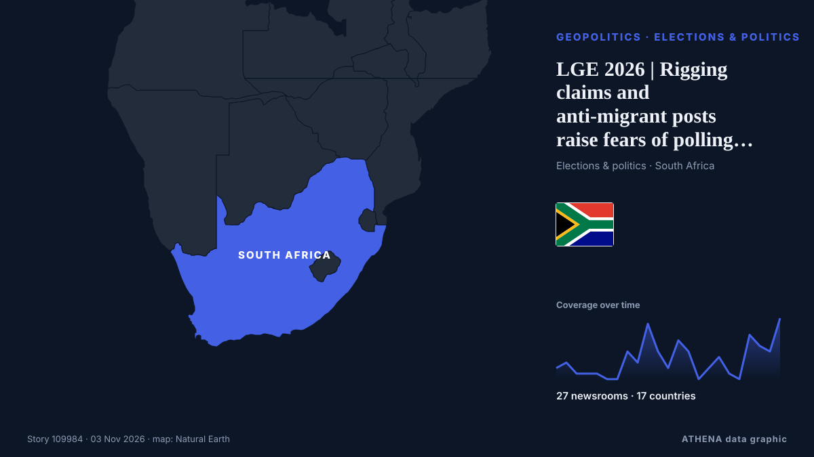

LGE 2026 | Rigging claims and anti-migrant posts raise fears of polling station clashes

نشرته بشكل مستقل 27 مصدرًا في 17 دولة منذ 1 نوفمبر، وأول من نشره City A.M.؛ والتغطية لا تزال تتسع. يقدّر ATHENA الخطر بأنه متزايد (4.2/10)، ويعود ذلك أساسًا إلى خطورة الضرر الموصوف ووتيرة التغطية. الثقة 90٪ (مرتفعة)، وعدد المصادر المستقلة المؤكِّدة: 27، بمتوسط موثوقية للمصادر يبلغ 71٪. وسائل الإعلام حسب البلد: جنوب أفريقيا (22), المملكة المتحدة (2), الهند (2). التغطية: من 1 نوفمبر إلى 2 نوفمبر، 26 ساعة.
لماذا يهم: قد تغيّر التطورات الأمنية والدبلوماسية التحالفات والتجارة والأسواق إلى ما هو أبعد بكثير من الدول المعنية مباشرة.
ما الذي تغيّر: 51 تقارير جديدة من 18 غرف أخبار خلال 24 ساعة حتى 3 نوفمبر.
العنوان الأول: LOCAL ELECTIONS 2026: What happens after the vote? Councils, coalitions and (maybe) controversies
تُعرض العناوين بالإنجليزية كما نُشرت.
نظرة سريعة
اختير وقُيِّم وكُتب وفق منهجية ATHENA المنشورة. لا يتدخل أي محرر في الأحداث بعينها. كيف يُنتَج ›
| 01 Nov 13:05 UTC | 2 |
|---|---|
| 01 Nov 15:05 UTC | 3 |
| 01 Nov 17:05 UTC | 1 |
| 01 Nov 19:05 UTC | 1 |
| 01 Nov 21:05 UTC | 1 |
| 01 Nov 23:05 UTC | 0 |
| 02 Nov 01:05 UTC | 0 |
| 02 Nov 03:05 UTC | 5 |
| 02 Nov 05:05 UTC | 3 |
| 02 Nov 07:05 UTC | 10 |
| 02 Nov 09:05 UTC | 5 |
| 02 Nov 11:05 UTC | 2 |
| 02 Nov 13:05 UTC | 7 |
| 02 Nov 15:05 UTC | 5 |
| 02 Nov 17:05 UTC | 0 |
| 02 Nov 19:05 UTC | 2 |
| 02 Nov 21:05 UTC | 4 |
| 02 Nov 23:05 UTC | 1 |
| 03 Nov 01:05 UTC | 0 |
| 03 Nov 03:05 UTC | 8 |
| 03 Nov 05:05 UTC | 6 |
| 03 Nov 07:05 UTC | 5 |
| 03 Nov 09:05 UTC | 11 |
| 03 Nov 11:00 UTC | 5.0 |
|---|---|
| 03 Nov 11:12 UTC | 4.2 |
| 03 Nov 11:12 UTC | 4.2 |
لماذا هذه الأرقام
الأهمية
الخطر
الثقة
التغطية — من نشر الخبر ومتى
العنوان كما نُشر · يفتح الأصل- City A.M. · المملكة المتحدةTreasury minister: ‘I don’t think employers are working people’
- SABC News · جنوب أفريقياGP legislature calls for higher police presence ahead of LGE
- Evening Standard (London) · المملكة المتحدةTreasury minister sparks fury after suggesting employers not ‘working people’
- The Hindu · الهندSporadic clashes, rigging allegations mark urban local body polls in Kurnool, Nandyal and Anantapur districts
- Times of India · الهندUK Labour minister under fire for claiming employers are not ‘working people’
- The Jerusalem Post · إسرائيلForeign interference suspicions don’t undermine election's integrity, CEC chief Sohlberg says
- Daily Maverick · جنوب أفريقياLOCAL ELECTIONS 2026: What happens after the vote? Councils, coalitions and (maybe) controversies
- Novinite · بلغارياThe Bulgarian community in London has been actively voting since the morning
- IOL · جنوب أفريقيا20 political-linked murders, 139 election crime cases recorded as South Africa heads to polls
- Premium Times · نيجيرياEDITORIAL: 2027: Voting candidates of popular choice, not by threats
- Club of Mozambique · موزمبيقMozambique: 490 citizens deported from South Africa for illegal stay
- SABC News · جنوب أفريقياExtensive security measures vital to ensure peaceful polls: Analyst
- IOL · جنوب أفريقياAI must serve South Africans, not leave them behind
- IOL · جنوب أفريقيا‘You march, you commit a crime’: Police issue stern warning ahead of local government elections
- eNCA · جنوب أفريقياPensioners vote as they lament water woes
- SABC News · جنوب أفريقياMeasures in place to ensure free and fair polls in KZN: Premier Ntuli
- The Straits Times · سنغافورةSouth Africa's splintering vote sets up multi-party battle for cities
- eNCA · جنوب أفريقياEkurhuleni pensioners endure 51 days of water woes as they cast special votes
- IOL · جنوب أفريقياDurban Chamber at 170: what it told Ramaphosa about the Durban's deteriorating port
- IOL · جنوب أفريقيا546 parties, 137,000 candidates and a troubled local government system: Ramaphosa warns of corruption
- RFI English · فرنساMiami voters weigh local hardship and America's global role as early voting ends
- eNCA · جنوب أفريقياReporter Diaries | Special voting under way in Knysna
- IOL · جنوب أفريقياKZN 2026 Elections: Premier Ntuli confident as Special Votes begin
- eNCA · جنوب أفريقياElections 2026 | Police urged to focus on hotspots
- AllAfrica · AFRSouth Africa: Soldiers On Standby As Police Prepare for Election Violence
- AllAfrica · AFRSouth Africa: R548-Billion Investment Plan Promises More Than 60,000 Jobs
- Club of Mozambique · موزمبيقSouth Africa’s splintering vote sets up multi-party battle for cities
- AllAfrica · AFRSouth Africa: Rigging Claims, Xenophobia Raise Fears of Polling Station Tensions
- eNCA · جنوب أفريقياElections 2026 | President Ramaphosa calls for peaceful polls
- The Local Sweden · السويد'It will not happen': Top Centre Party MP rules out Sweden Democrat deal
- IOL · جنوب أفريقياPolice monitor anti-foreigner tensions and election disinformation ahead of Wednesday’s vote
- Daily Maverick · جنوب أفريقياDIGITAL POLITICS OP-ED: The anti-foreigner movement squares up to the state in run-up to elections
- IOL · جنوب أفريقيا'No-one should be blocked from voting': Migration committee and civic groups pledge peaceful participation ahead of local elections
- eNCA · جنوب أفريقياJoburg Crisis Alliance threatens legal action over ongoing water crisis
- N1 Serbia (English) · صربياRIK releases results of repeat vote
- Xinhua (English) — page reader · الصينAs South Africans vote locally, competition for municipal power draws scrutiny
- IOL · جنوب أفريقياLGE 2026 | A turning point for South Africa's municipalities?
- IOL · جنوب أفريقياMKP mayoral candidate says he will address Nomvalo claims after local elections
- The Local Sweden · السويدSecond vote: What happens next in Sweden's government formation process?
- SABC News · جنوب أفريقياRetired lawyer John Price hopeful on improved service delivery